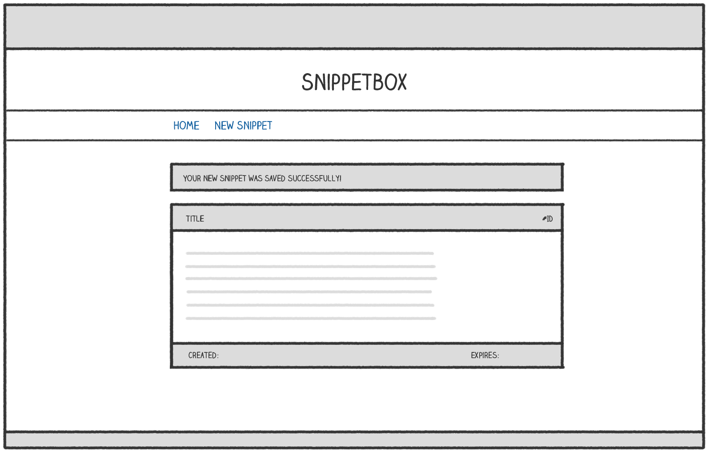

Chapter 9.
Stateful HTTP
A nice touch to improve our user experience would be to display a one-time confirmation message which the user sees after they’ve added a new snippet. Like so:

A confirmation message like this should only show up for the user once (immediately after creating the snippet) and no other users should ever see the message. If you’ve been programming for a while already, you might know this type of functionality as a flash message or a toast.
To make this work, we need to start sharing data (or state) between HTTP requests for the same user. The most common way to do that is to implement a session for the user.
In this section you’ll learn:
- What session managers are available to help us implement sessions in Go.
- How to use sessions to safely and securely share data between requests for a particular user.
- How you can customize session behavior (including timeouts and cookie settings) based on your application’s needs.